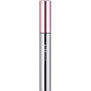
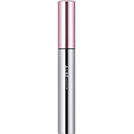

商品の特徴
色：ＢＫ６１１
・時間がたっても、汗や皮脂で黒くにじみにくいタイプです。
・専用クレンジングは不要。簡単にクレンジングすることができます。
- 成分・分量
- ＜成分＞
水、カルナウバロウ、ミツロウ、アクリル酸アルキルコポリマーアンモニウム、水添ホホバ油、ヒマワリ種子ロウ、プルラン、BG、ステアリン酸、コメヌカロウ、キャンデリラロウ、ベヘン酸、TEA、ステアリン酸PEG-40、水溶性コラーゲン、ローヤルゼリーエキス、シメチコン、エタノール、EDTA-2Na、フェノキシエタノール、メチルパラベン、酸化鉄
- 用法及び用量
- 日本人の短く、少ないまつ毛を根元から残さずキャッチする新開発の「カンタッチブラシ」。簡単に、ぱっちりした目もとに。
 
